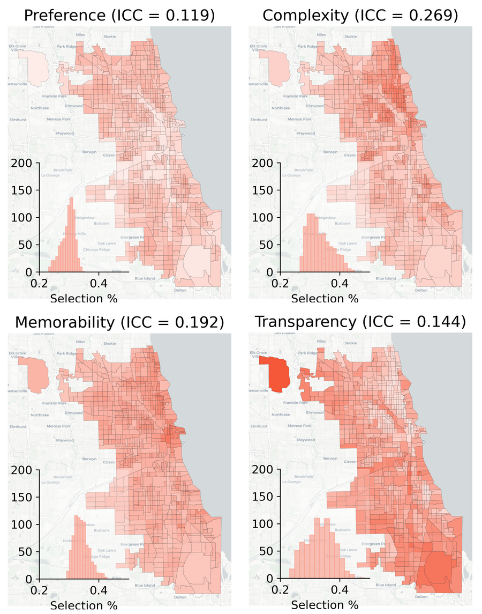
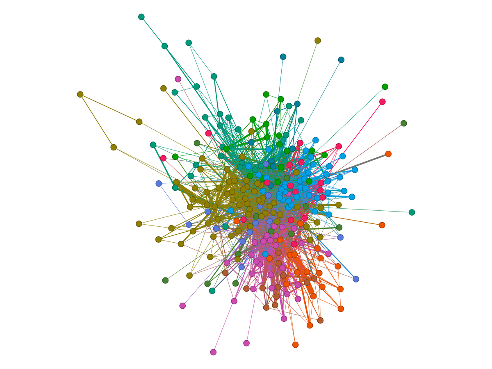
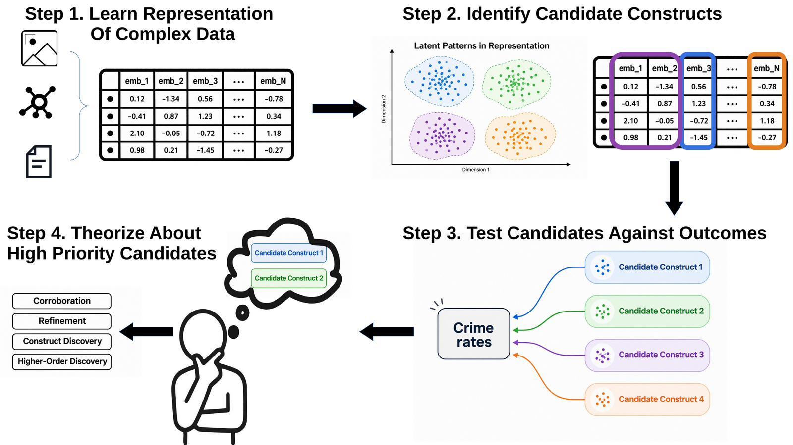

Computer Vision · Ambient Populations · Natural Language Processing

Tract-level variation in AI-estimated street-view gists across Chicago, from "Eyes" on the Street (2026).
Criminological theories often explain crime through characteristics of places and the people in them: what environments look like, how they are managed, and who is present over the course of the day. These characteristics are central to theory but difficult to observe systematically, particularly at scale. Census and administrative data remain indispensable, yet they describe places largely through static, residential, and officially recorded attributes, and they often miss the fine-grained, dynamic, and experiential features that theory suggests matter. My foundational research program develops computational measures that capture dimensions of urban environments often overlooked by conventional data sources, and uses them to revisit longstanding questions about places and crime.
The first concerns the built environment. Crime prevention through environmental design (CPTED) holds that the visual character of streets shapes crime, but systematic observation of streets has traditionally been costly and limited in scope. Drawing on cognitive psychology, my collaborators and I trained neural networks on human ratings of Google Street View images to estimate broad perceptual "gists" of street scenes, such as preference, complexity, and enclosure, across more than 187,000 Chicago images. These measures allowed us to ask how the overall impression of an environment, and not only the objects it contains, relates to crime.
The second concerns who occupies places. Neighborhood research has typically characterized places by their residents, but the people who work in, visit, and pass through a place can differ substantially from those who live there. Using geotagged social media and mobility data, I measure these ambient populations, examining how the presence of tourists and commuters relates to crime and whether the racial heterogeneity of a neighborhood's users, rather than its residents, helps explain neighborhood differences in crime.
The third concerns how places are run. Place management is central to explanations of why crime concentrates at particular properties, but it is rarely recorded in business or administrative data. Online reviews offer one window into how places are experienced and operated: in Boston, parcels with higher-rated businesses on Yelp had lower rates of disturbances. Because reviews contain far richer information than a star rating, my ongoing work uses natural language processing to examine what reviewers say about how places are managed, with the goal of identifying more precisely which aspects of management matter for crime.
Related publications: "Eyes" on the Street · Ambient Racial Heterogeneity · Commercial Place Managers · Who 'Tweets' Where and When
Reddit · Dark Web · Network Analysis

Crowd-sourced gang social network built from Reddit discussions, from "EBK" (2025).
Online communities and marketplaces are not simply repositories of digital behavior. They are socially organized environments, with their own communities, relationships, norms, and opportunities, in which harmful and criminal behavior emerges and unfolds. They are also tied to offline places, groups, and institutions. In this emerging research program, I study how the structure and social organization of online environments shape harmful behavior, and how these processes intersect with offline social life. The work carries ecological criminology's long-standing interest in how environments shape behavior into digital settings, without assuming that online environments work the same way physical ones do.
One line of this work treats online discussion as a window into offline social relationships that are difficult to observe through conventional methods. Using natural language processing of Reddit discussions about Chicago, my collaborators and I built a social network of 271 gang-affiliated individuals across 11 South Side gang sets. Ties to homicide victims and central positions in the network, rather than gang affiliation, were associated with greater risk of victimization, offering quantitative support for recent ethnographic accounts of how gang dynamics have changed.
A second line asks how harmful behavior is distributed across online communities. Using large-scale Reddit data, I am examining cyber-aggression and hate speech across communities, with attention to how community characteristics, individual patterns of participation, and broader social contexts may shape where aggressive behavior occurs and what form it takes, and how online harms connect to offline institutions and communities.
A third line turns to the organization of illicit markets. Dark web marketplaces connect buyers and vendors who may be widely dispersed, yet the trade they support remains rooted in offline places and economies. Using marketplace data, I map the international geographic network of illicit transactions, examining how its structure relates to vendor supply and demand in order to better understand the geosocial dynamics of the global drug trade.
Related publication: "EBK"
Representation Learning · Theory Development
Quantitative criminology usually begins with theory: researchers identify a construct and then design measures to capture it. This approach is powerful, but it means we mostly measure what we already know to look for. Discovering Emergent Constructs (DEC) is a framework I am developing for a complementary approach, in which computational representation learning is used to identify candidate constructs: patterns in complex data that are not defined in advance but are statistically associated with outcomes of interest.
A candidate construct is a starting point for theoretical work, not a finding in itself. DEC follows a four-stage procedure that ends in abductive interpretation, which can lead to one of four outcomes: it can corroborate existing theory, suggest refinements to it, point to a construct that has not been recognized, or reveal higher-order patterns in how constructs relate to one another. Its purpose is to inform theory development, not simply to improve predictive accuracy.
My initial DEC research applies the framework to urban environments. Vision-language models were used to generate descriptions of 187,048 Google Street View images from Chicago, and these descriptions were semantically embedded and analyzed to identify nine candidate constructs that predict micro-spatial differences in robbery beyond traditional controls and standard computer vision measures. Interpreting these candidates suggested that crime-associated visual patterns appear as configurations of co-occurring environmental features that cut across conventional theoretical categories.
Although this first application uses street-view imagery, DEC is not a computer vision technique or a method specific to urban crime. It is intended as a general approach to computationally assisted construct discovery that could be applied to text, images, networks, and other kinds of data, and to substantive questions well beyond the study of place.
Preprint: Discovering Emergent Constructs · CrimRxiv
